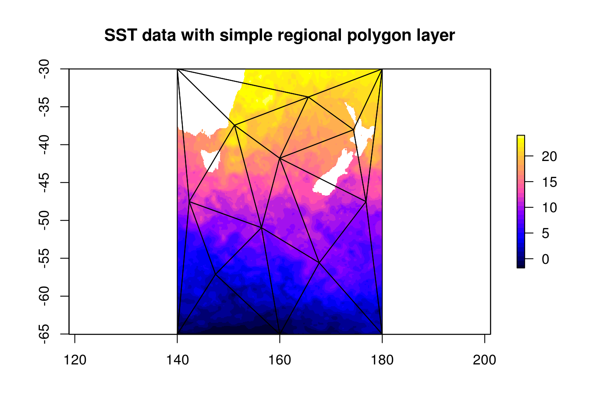
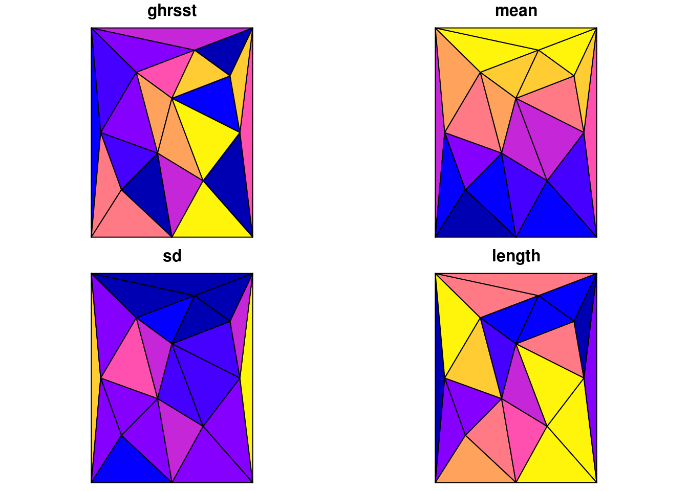

vignettes/tabularaster-usage.Rmd
tabularaster-usage.RmdThe raster package is extremely powerful in the R ecosystem for spatial data. It can be used very efficiently to drive data extraction and summary tools using its consistent cell-index and comprehensive helper functions for converting between cell values and less abstract raster grid properties.
Tabularaster provides some more helpers for working with cells and tries to fill some of the (very few!) gaps in raster functionality. When raster returns cell values of hierarchical objects it returns a hierarchical (list) of cells to match the input query.
Tabularaster provides:
as_tibble for raster data, with options for value column and cell, dimension and date indexingsf support to raster
Extract the cell numbers of raster r that are co-located with object q. (The argument names are x and query).
In the above example, r is any raster object and q is another spatial object, used as a query. Cell numbers can be extracted from any raster object, any of a raster::raster, raster::stack or raster::brick. It’s not really relevant what that object contains, as only the dimensions (number of cells in x and y) and the extent (geographic range in x and y) determine the result. The r object can actually not contain any data - this is a very powerful but seemingly under-used feature of the raster package.
The object q may be any of sf, sp layer types or a matrix of raw coordinates (x-y). (‘Exotic’ sf types like GEOMETRYCOLLECTION or POLYHEDRALSURFACE, and mixed-topology layers are not yet supported - let me know if you really need this and we’ll make it work.)
Tabularaster follows the basic principles of tidy data and hypertidy data and aspires to keep the software design out of your way and simply help to get the task done.
In straightforward usage, cellnumbers returns a tibble with object_ to identify the spatial object by number, and cell_ which is specific to the raster object, a function of its extent, dimensions and projection (crs - coordinate reference system).
## Loading required package: sp## class : RasterLayer
## dimensions : 87, 61, 5307 (nrow, ncol, ncell)
## resolution : 0.01639344, 0.01149425 (x, y)
## extent : 0, 1, 0, 1 (xmin, xmax, ymin, ymax)
## coord. ref. : NA
## data source : in memory
## names : layer
## values : 94, 195 (min, max)## Warning: projections not the same
## x: NA
## query: NA## # A tibble: 1 x 2
## object_ cell_
## <int> <dbl>
## 1 1 2654This cell number query can be then be used to drive other raster functions, like extract and xyFromCell and many others.
## x y
## [1,] 0.5 0.5##
## 161This is an extremely efficient way to drive extractions from raster objects, for performing the same query from multiple layers at different times. It’s also very useful for using dplyr to derive summaries, rather than juggling lists of extracted values, or different parts of raster objects.
There is an as_tibble method with options for cell, dimension, and date.
##
## Attaching package: 'dplyr'## The following objects are masked from 'package:raster':
##
## intersect, select, union## The following objects are masked from 'package:stats':
##
## filter, lag## The following objects are masked from 'package:base':
##
## intersect, setdiff, setequal, union## # A tibble: 5,307 x 2
## cellvalue cellindex
## <dbl> <int>
## 1 100 1
## 2 100 2
## 3 101 3
## 4 101 4
## 5 101 5
## 6 101 6
## 7 101 7
## 8 100 8
## 9 100 9
## 10 100 10
## # ... with 5,297 more rows## # A tibble: 10,614 x 3
## cellvalue cellindex dimindex
## <dbl> <int> <int>
## 1 100 1 1
## 2 100 2 1
## 3 101 3 1
## 4 101 4 1
## 5 101 5 1
## 6 101 6 1
## 7 101 7 1
## 8 100 8 1
## 9 100 9 1
## 10 100 10 1
## # ... with 10,604 more rows## # A tibble: 10,614 x 2
## cellvalue dimindex
## <dbl> <int>
## 1 200 2
## 2 200 2
## 3 202 2
## 4 202 2
## 5 202 2
## 6 202 2
## 7 202 2
## 8 200 2
## 9 200 2
## 10 200 2
## # ... with 10,604 more rowsThe date or date-time is used as the dimension index if present.
btime <- setZ(b, Sys.time() + c(1, 10))
as_tibble(btime) %>% group_by(dimindex) %>% summarize(n = n())## # A tibble: 2 x 2
## dimindex n
## <dttm> <int>
## 1 2018-08-09 16:34:16 5307
## 2 2018-08-09 16:34:25 5307## # A tibble: 10,614 x 5
## cellvalue cellindex year month day
## <dbl> <int> <int> <int> <int>
## 1 100 1 2018 8 9
## 2 100 2 2018 8 9
## 3 101 3 2018 8 9
## 4 101 4 2018 8 9
## 5 101 5 2018 8 9
## 6 101 6 2018 8 9
## 7 101 7 2018 8 9
## 8 100 8 2018 8 9
## 9 100 9 2018 8 9
## 10 100 10 2018 8 9
## # ... with 10,604 more rowstidyr::extract and raster::extract, dplyr::select and raster::select as I always use these packages together.cellnumbers doesn’t currently reproject the second argument query, even when would make sense to do so like extract does. This is purely to reduce the required dependencies.If you find that things don’t work, first check if it’s a namespace problem, there are a few function name overlaps in the tidyverse and raster, and in R generally. There is no way to fix this properly atm.
Tabularaster doesn’t reproject on the fly, but it will tell you if the CRS (projection metadata) of the two objects is not the same, or if either or both are NA. I’d like a light-weight reprojection engine in order to do this, and proj4 is a candidate that I’ve explored enough to use but a modern, trim PROJ.4 interface for R in its own package is something I think we need.
Ultimately the cell index vector should probably be a formal class, with knowledge of its extent and grain. I’d love this to be formalized, but I seem to not have the design expertise required to get the system right. It’s something that ggplot2 needs, but there aren’t any existing examples in R anywhere as far as I can tell. The stars project is a good place to see what else is happening in this space in R. Other examples are the unfinshed tbl_cube in dplyr, the R6 objects in velox, and the mesh indexing used by packages rgl, Vcg, icosa, dggridR, deldir, geometry, RTriangle, TBA, (and there are many others).
If you are interested in these issues please get in touch, use the Issues tab or discuss at r-spatial, get on twitter #rstats or contact me directly.
This example uses extracted data per polygon and uses base R to lapply across the list of values extracted per polygon. Here we show a more dplyrish version after extracting the cell numbers with tabularaster.
library(tabularaster)
## https://gis.stackexchange.com/questions/102870/step-by-step-how-do-i-extract-raster-values-from-polygon-overlay-with-q-gis-or
library(raster)
# Create integer class raster
r <- raster(ncol=36, nrow=18)
r[] <- round(runif(ncell(r),1,10),digits=0)
# Create two polygons
cds1 <- rbind(c(-180,-20), c(-160,5), c(-60, 0), c(-160,-60), c(-180,-20))
cds2 <- rbind(c(80,0), c(100,60), c(120,0), c(120,-55), c(80,0))
polys <- SpatialPolygonsDataFrame(SpatialPolygons(list(Polygons(list(Polygon(cds1)), 1),
Polygons(list(Polygon(cds2)), 2))),data.frame(ID=c(1,2)))
## do extraction in abstract terms
(cn <- cellnumbers(r, polys))## Warning: projections not the same
## x: +proj=longlat +datum=WGS84 +ellps=WGS84 +towgs84=0,0,0
## query: NA## Warning in cellnumbers.default(r, polys): cellnumbers is very slow for
## SpatialPolygons, consider conversion with 'sf::st_as_sf'## # A tibble: 63 x 2
## object_ cell_
## <int> <dbl>
## 1 1 326
## 2 1 327
## 3 1 328
## 4 1 329
## 5 1 330
## 6 1 331
## 7 1 332
## 8 1 333
## 9 1 334
## 10 1 335
## # ... with 53 more rowslibrary(dplyr)
## now perform extraction for real
## and pipe into grouping by polygon (object_) and value, and
## calculate class percentage from class counts per polygon
cn %>% mutate(v = raster::extract(r, cell_)) %>% group_by(object_, v) %>% summarize(count = n()) %>%
mutate(v.pct = count / sum(count)) ## # A tibble: 18 x 4
## # Groups: object_ [2]
## object_ v count v.pct
## <int> <dbl> <int> <dbl>
## 1 1 1 2 0.0526
## 2 1 2 9 0.237
## 3 1 3 3 0.0789
## 4 1 4 1 0.0263
## 5 1 5 3 0.0789
## 6 1 6 7 0.184
## 7 1 7 3 0.0789
## 8 1 8 6 0.158
## 9 1 9 4 0.105
## 10 2 1 4 0.16
## 11 2 2 3 0.12
## 12 2 3 2 0.08
## 13 2 4 3 0.12
## 14 2 5 5 0.2
## 15 2 6 1 0.04
## 16 2 8 3 0.12
## 17 2 9 3 0.12
## 18 2 10 1 0.04## here is the traditional code used in the stackoverflow example
# Extract raster values to polygons
#( v <- extract(r, polys) )
# Get class counts for each polygon
#v.counts <- lapply(v,table)
# Calculate class percentages for each polygon
#( v.pct <- lapply(v.counts, FUN=function(x){ x / sum(x) } ) )library(tabularaster)
data("ghrsst") ## a RasterLayer
data("sst_regions") ## a polygon layer, contiguous with ghrsst
gcells <- cellnumbers(ghrsst, sst_regions) %>% mutate(object_ = as.integer(object_))## Warning in cellnumbers.default(ghrsst, sst_regions): cellnumbers is very
## slow for SpatialPolygons, consider conversion with 'sf::st_as_sf'result <- gcells %>% mutate(sst = raster::extract(ghrsst, cell_)) %>%
group_by(object_) %>%
summarize_at(vars(sst), funs(mean(., na.rm = TRUE), sd(., na.rm = TRUE), length))
library(spdplyr)
sst_regions <- sst_regions %>% inner_join(result, c("ghrsst" = "object_"))
plot(ghrsst, col = bpy.colors(30), addfun = function() plot(sst_regions, add = TRUE),
main = "SST data with simple regional polygon layer")

library(tabularaster)
library(raster)
library(dplyr)
data("rastercano")
data("polycano")
cells <- cellnumbers(rastercano, polycano[4:5, ])## Warning: projections not the same
## x: NA
## query: NA## Warning in cellnumbers.default(rastercano, polycano[4:5, ]): cellnumbers is
## very slow for SpatialPolygons, consider conversion with 'sf::st_as_sf'## # A tibble: 305 x 2
## object_ cell_
## <int> <int>
## 1 1 1129
## 2 1 1190
## 3 1 1251
## 4 2 854
## 5 2 915
## 6 2 976
## 7 2 1037
## 8 2 1098
## 9 3 1
## 10 3 2
## # ... with 295 more rows## Warning: projections not the same
## x: NA
## query: NA## # A tibble: 331 x 2
## object_ cell_
## <int> <dbl>
## 1 1 1129
## 2 1 1129
## 3 1 1251
## 4 1 1251
## 5 1 1129
## 6 1 1098
## 7 1 1098
## 8 1 1098
## 9 1 1098
## 10 1 1037
## # ... with 321 more rowsIn the case of polygons, there’s an argument weights that can be used to get an approximate weighting for partial cell coverage.
poly <- sf::st_sf(a = 1, geometry = sf::st_sfc(sf::st_polygon(list(
cbind(c(0.57, 0.55, 0.19, 0.43, 0.82, 0.57),
c(0.22, 0.24, 0.46, 0.77, 0.56, 0.22))))))
xweight <- cellnumbers(rastercano, poly, weights = TRUE)
dgrid <- setValues(rastercano, NA_real_)
dgrid[xweight$cell_] <- xweight$weight_
plot(dgrid, main = "cell weights based on partial overlap", col = viridis::viridis(9),
addfun = function() polygon(poly$geometry[[c(1, 1)]]))It’s an unfortunate symptom of fragmentation in the R spatial tools that two of the best and most highly used packages raster and sf have no formal way to be used together.
Here we use the extent capability of spex, and the tabularaster tools extract and cellnumbers to build a raster from an sf layer.
library(sf)
poly <- read_sf(system.file("shape/nc.shp", package="sf"))
library(spex)
extent(poly)
spex(poly)
## we can't do this
try(grid <- raster(poly))
## but we can do
(grid <- raster(spex(poly), nrow = 100, ncol = 140))
## index the raster with the sf layer
(cn <- cellnumbers(grid, poly))
grid[cn$cell_] <- cn$object_
## we slasterized it (slow rasterize)
plot(grid)That’s nice, since we can actually use extract with the cell numbers, rather than the sf object. This is preferable for repeated use of the extraction, e.g. for time series extraction where we need to visit each time step iteratively. (Raster is already index-optimized for multi-layers raster objects).
Now use fasterize to generate the grid, and use cellnumbers to extract.
## fasterize it
library(fasterize)
#poly$object_ <- as.integer(seq_len(nrow(poly)))
fgrid <- fasterize(poly, grid, field = "AREA")
scl <- function(x) {rg <- range(x, na.rm = TRUE); (x - rg[1])/diff(rg)}
plot(xyFromCell(grid, cn$cell_), pch = 19, cex = 0.4, col = bpy.colors(26)[scl(raster::extract(fgrid, cn$cell_)) * 25 + 1])Use velox instead
library(spex)
library(raster)
library(tabularaster)
## but we can do
(grid <- raster(spex(sst_regions), res = 0.2))
system.time({
library(velox)
vx <- velox(setValues(grid, 0))
vx$rasterize(sf::st_as_sf(sst_regions), field = "ghrsst")
library(dplyr)
res1 <- as_tibble(vx$as.RasterLayer()) %>%
#rename(object_ = cellvalue) %>%
filter(!is.na(cellvalue))
})
system.time({
res2 <- as_tibble(rasterize(sst_regions, grid, field = sst_regions$ghrsst))
})
vcellnumbers <- function(x, query, ...) {
query$object_ <- seq_len(nrow(query))
query <- sf::st_as_sf(query)
x <- setValues(x[[1]], 1)
vx <- velox(x)
vx$rasterize(query, field = "object_")
vx$as.RasterLayer() %>%
as_tibble(na.rm = FALSE) %>%
dplyr::rename(object_ = cellvalue, cell_ = cellindex)
}
vcellnumbers(grid, sst_regions)
cellnumbers(grid, sst_regions)